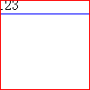
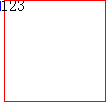
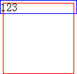
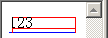
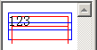
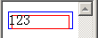
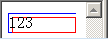
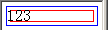

根据W3C CSS2.1规范第8.3节中的描述，边距属性设置了一个框的边距区的宽度。'margin' 缩写属性设置所有四边的边距，而其它的边距属性（ 'margin-top' ，'margin-right' ， 'margin-bottom' 及 'margin-left' ）只设置它们代表的那一边的边距。
边距属性的取值可以是下面值之一：
边距属性允许有负值，不过可能有与实现相关的限制。
IE6 IE7 IE8(Q) 负边距 (margin) 导致元素溢出 hasLayout 容器时显示异常。
严重的情况下会破坏整体布局。
| IE6 IE7 IE8(Q) |
|---|
对于此问题，我们通过以下的测试用例来说明。
分析以下代码：
<div style="width:100px; height:100px; border:1px solid red;"> <div
style="border:1px solid blue; margin:-5px;">123</div> </div>
一个100x100像素的红色边框 DIV 元素内包含了一个没有设置宽度和高度的蓝色边框的 DIV 元素，且这个子元素四个方向各设置了-5px的 'margin' 。这段代码在不同的浏览器环境中的表现如下：
| IE6 IE7(Q) IE8(Q) | IE7(S) | IE8(S) Firefox Opera Safari Chrome |
|---|---|---|
|  |  |  |
在实际情况中，当给一个块级元素设置了负值的 'margin' ，如果该元素的父容器 'overflow' 为 'visible' （ 'overflow' 的默认值就是 'visible' ），这个块级元素可能会由于负值的 'margin' 而使其父容器无法全容纳其自身，其会部分“溢出”父容器并在父容器之外被渲染。关于盒模型的详细资料，请参考 W3C CSS2.1 规范中的内容： Box Model 。
然而根据上面的测试代码的结果可见，
上面测试代码中容器由于设置了宽度及高度而触发了其 hasLayout 属性，下面看看若容器的 hasLayout 为 false，IE 对由负的 'margin' 溢出容器的子元素的处理：
<div style="border:1px solid red;"> <div style="border:1px solid blue;
margin:-5px;">123</div> </div>
上述代码中的元素均没有触发IE中的hasLayout属性，这段代码在不同的浏览器环境中的表现如下：
| IE6(Q) | IE6(S) | IE7(Q) IE8(Q) | IE7(S) | IE8(S) |
|---|---|---|---|---|
|  |  |  |  |  |
在容器没有触发hasLayout属性后，出现了更加怪异的效果，且无法找到其规律。
在确保元素的容器触发 hasLayout 的前提下，为该元素同时设置 'position:relative' 和 'zoom:1'。
首先需要保证容器在IE中触发 hasLayout 属性，可以通过zoom:1实现。
在 IE7(S) 中，当使设置了负值 'margin' 的元素的 hasLayout 属性为 'true' ，即触发该元素的 hasLayout 特性后，此 Bug 现象消失，例如为该元素设置宽度或高度，或者在完全不影响该元素盒模型的情况下使用 zoom:1 来触发 hasLayout 从而消除此 Bug 。
在 IE6 IE7(Q) IE8(Q) 中，仅仅触发 hasLayout 特性并不一定能消除此 Bug ，同时还需要为该元素设置 'position:relative'，即在完全不影响该元素盒模型的情况下使用 zoom:1 'position:relative' 。
| 操作系统版本: | Windows 7 Ultimate build 7600 |
|---|---|
| 浏览器版本: |
IE6
IE7 IE8 Firefox 3.6 Chrome 4.0.302.3 dev Safari 4.0.4 |
| 测试页面: | |
| 本文更新时间: | 2010-07-16 |
margin negative overflow container 负边距